来源：https://y2mt3o47i3.feishu.cn/docx/Ixx1dnbCVo4ZA8xrMcqcUYsGn8d
昆山富士康流水线操作工，辞职做抖音短视频带货，今年8个月收佣40万，复盘分享。我行你也行。
大家好，我是奋斗ing。今年是加入生财的第三年。之前因为一直和老婆分居上海昆山两地，所以去年3月我辞掉了昆山富士康的工作，
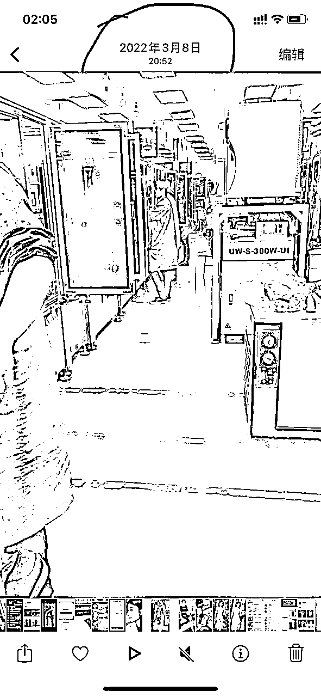
回到了老家全职做抖音。经过几个月的兜兜转转，我最终选择了抖音中医养生带货这个赛道。经过一年的摸索，在这个赛道持续深耕。今年我用8个月的时间，收获佣金40万，这是我曾经想都不敢想的事情，可能我在昆山富士康按我当时的工资，需要用8年时间，都不一定存的下来这么多钱。我深知这是因为我踩中了时代的红利，并不是我有多厉害。其实我这个人很笨，没有别人那么聪明。一点就通，一学就会，甚至还能举一反三。我呢，在学校的时候一直学习很努力，可成绩也只是中等偏上一点点。学什么都慢，但是我听过一句话：“上帝为每一只笨鸟，都留了一根比较低的树枝。”我想，我也要找到属于我的那一根。
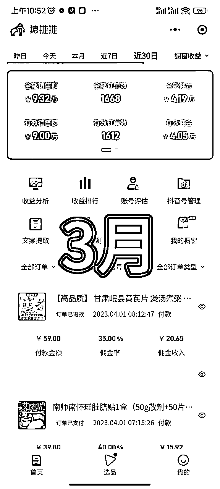
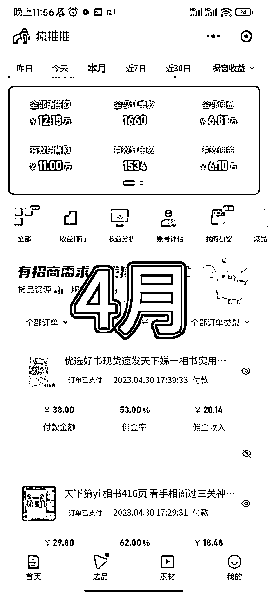
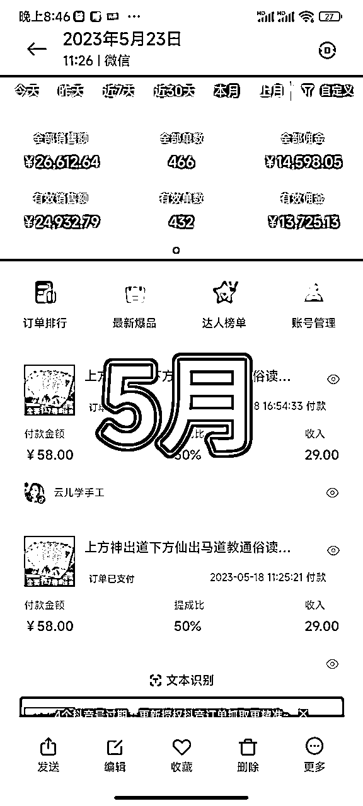
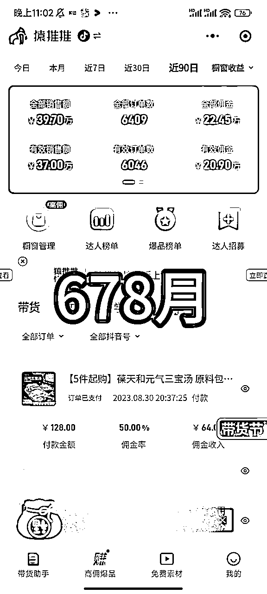
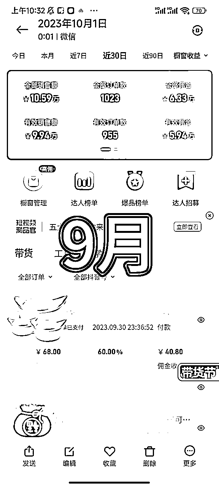
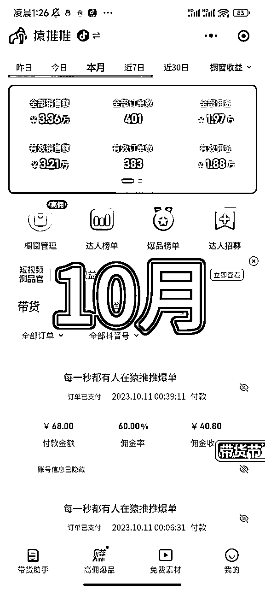
一起加起来40万。
在抖音平台，用各类名家的讲课视频做背书，然后混剪涨粉，有了粉丝之后再来卖名家的相关书籍，或者他们视频课里讲过的滋补汤品等。他们没有讲过的品，和中医相关的其他名家书籍，中医、国学相关的品都可以卖。
比如之前用徐文兵、张至顺、曲黎敏、曾仕强、南怀瑾、倪海厦等名人视频剪辑涨粉。因为他们本身就都有一定的受众粉丝喜欢他们，再加上他们讲课的一些内容，对于我们普通人来说，是极具有价值的，一些养生干货小知识不管有用与否，感兴趣的中老年人，总是会忍不住的点上关注和收藏。所以当观众刷到他们的讲课视频时，如果点上了关注，那么这个人就是你的粉丝了，积累1000粉丝后你就可以，在抖音开通橱窗带货变现了。
账号长什么样
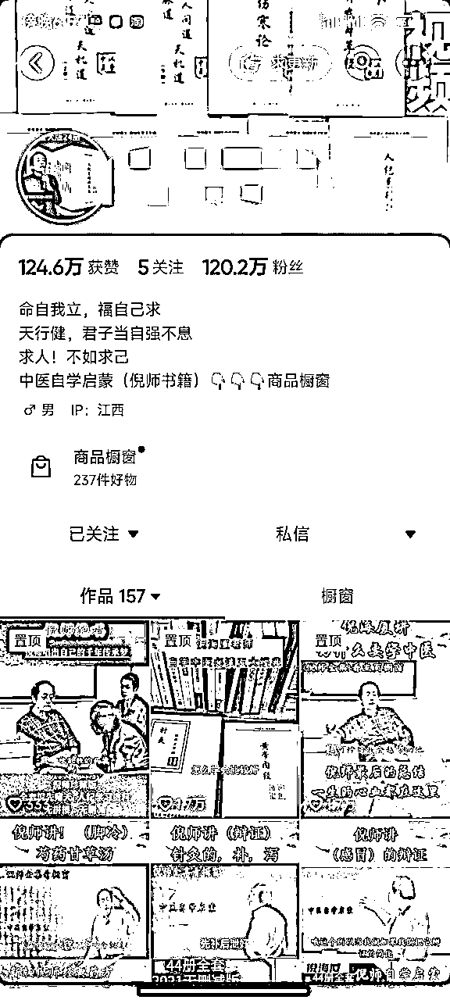
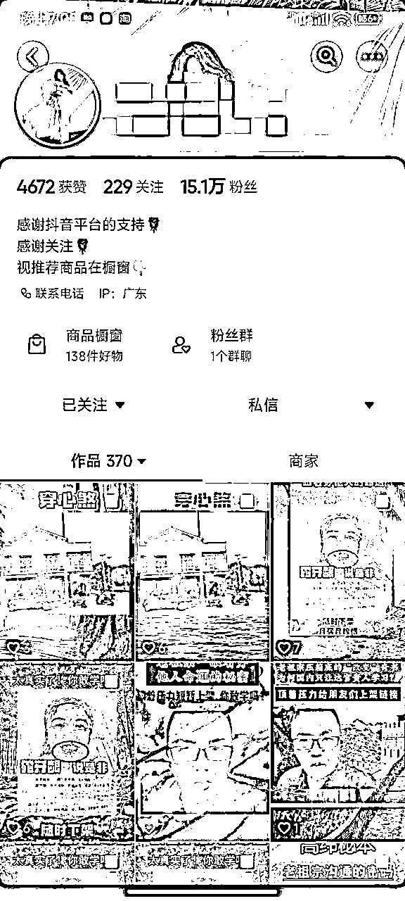
卖的品有，比如：倪海厦老师的《经典药方》《人纪》《天纪》等书籍，或不是他的《黄帝内经》《脉诊》《刺血术》《辨证录》等其他书籍也都可以卖。或者这类账号也可以卖民俗类的，相术、玄学书籍。都出单很好。只要人群画像符合，都可以卖。有的高转化的品，1000播放就可以拿到将近500块钱的佣金。一条视频顶我以前两三天的工资。。。
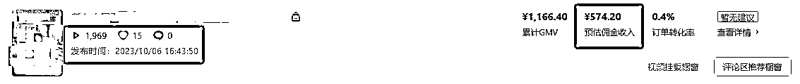
视频200播放也有80块钱的佣金可以拿。
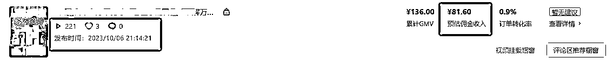
我的方法就是很简单，在抖音找到想要抄作业的赚钱账号，看他们的高赞带货视频，接着就是1:1像素级模仿，爆款视频用什么形式，我就用什么形式跟。
思路就是抄，模仿。通过跟爆款账号和红利爆品，今年目前挣了40万。
想通过这次复盘，理清楚自己是怎么挣到这些钱的？其中有那些经验可以吸取延用的，可以复制的？还有就是，想告诉大家，目前抖音还是只要你会抄，就能挣到钱的阶段。所以大家想做的，行动起来，千万不要错过了。
3月的佣金主要来自于，《经典药方》和当时的热门大爆品《艾脐贴》。经典药方这个品3月份还能出单还是很意外的。因为它是去年的九十月份的品了。刚好今年3月的时候，我当时真的是实在不知道发什么品了，而且账号主要做的都是倪海厦，所以想着那还是发个倪海厦的品吧，就筛选到 倪海厦的名品《经典药方》了，这个品很多人大爆过，有个同学一个月这个品搞了13万多的佣金。当时我的爆款视频还是22年10月的老视频模版，爆款从发，很好用。在好几个账号上发，都能出单。
验证了：好的爆款内容，换个时间点发，一样有很大的机会跑出来。如果当我们感觉自己手头没有品可以跟的时候，那么就根据自己账号的属性，比如用的什么起号的？中医，国学还是玄学？那个IP起号的？再围绕这些内容去选品，找历史爆过的大爆品再拿回来，二创重新发，多发几个账号测试一下。因为历史上的大爆品，它爆一定是有它的理由爆点的，那你把这些有价值的点，拿出来重新用视频或者图文展示给观众，一样能出单，能爆。
接着就是今年大大大爆款艾脐贴了，视频文案内容是用国学大师南怀瑾做背书。把这个品带火的，是我认识的一位大佬。当时她真人出镜口播，爆了，而且连续爆了两三条，后来其他人出镜也跟爆了。我看视频也挺短的，话术也不难。我也就尝试出镜了一下，第一次口播是在家里出镜，效果不太好。后来听说在户外比较好。我也就跑到户外录，运气较好加本身这个品已经开始大爆，是热门品，我也爆了4条。 后来每天就都发真人出镜的艾脐贴口播，基本每一条都能出单。那时候口播3条素材，要录制2小时。因为总想着镜头面前自然一点，所以就是不断的NG重拍，直到自己感觉行了，才停。
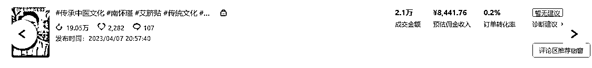
验证了：大爆品来临的时候，尽管冲。只要跟上都能喝口汤，运气好的吃两口肉也 是有可能的。其中有一条爆的真人出镜，我二次重发第二遍又爆了。爆款视频可以重发可能再爆。 其实这次的经验也告诉我，真正的红利爆品来临时，不要想什么镜头表现力，或者有完美主义心态。只管上，只管冲就行了。爆款用什么方式，我就用什么方式。不要想着一次不NG录个完美的口播视频，那样会效率很低像我一样。要知道，当时这个品火的时候。很多人真人出镜带个口罩录，用别人的音频拍同款，都能爆，所以爆品来临时候，镜头表现力真的不是什么重点。现在回看我当时爆的口播视频，很是一般，也不专业。其实和我录的什么镜头表现力，视频流畅程度，半毛钱关系都没有。就是当时这个品是这个赛道的超级红利品而已。干就完了。
3月最终收佣4万。
4月佣金组成的：倪师人纪5本，艾脐贴，倪师卡片，天下第一相书。因为3月真人出镜尝到了甜头，所以4月依然持续的真人出镜。口播了很多倪师的品。方法很简单就是，抄对标账号的爆款口播文案内容，自己说一遍，拍一遍就好。 因为口播不熟练，所以产出极低。当时，只做了一个账号。每天产出2~3条口播视频。单条视频最高佣金：2.6W，占了4月佣金收入的半壁江山。
4月中旬时候，我的佣金是3.7W，艾脐贴的热度依然还在。但是当时的我，整个人是很焦虑的，因为深知自己只是运气好，爆了一两条视频而已。自己并没有独立的创作口播视频的能力，哪怕就是简单的二创文案，对于不善表达的我来说都很难。（当时心里挣着钱了，也并不开心）
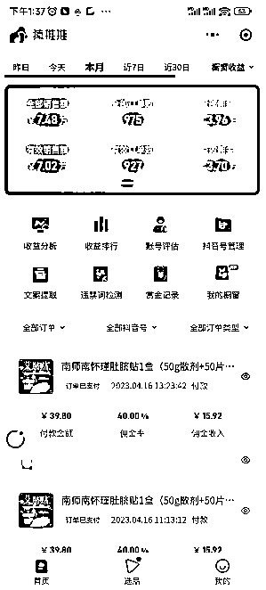
因为我也通过巨量百应后台查看了自己当时的数据。竟然有连续12条口播带货视频没有出单。意味着一个星期7天的口播带货视频都没出单。而且当时是相当于一个人在做这个项目的，平时很少和人交流，也不知道分享点什么。顶多每天看看大群消息。真的是很孤独的。后来4月下旬加入了一位很牛的老师的学习群，在这里找到了一群志同道合的圈友，我们一起战斗，在一个人前行没有力量的时候，可以依靠大家的晒单加加油，打打气。4月尾声，我一共10个号封了8个，
感悟：我承认我自己不够强大，我独自一人前行很焦虑，也接受自己的能力普通。但是没关系，遇到问题解决问题，自己不强找比自己强的大佬请教。没有队友，那就主动走出去，去寻找，去交流。切记，真诚、利他是前行路上的基石，有这些铺路，可以走的更稳更远。
4月最终收佣6.1万。
5月开局是个开门红，7天1万佣。凭什么拿到呢？因为当时是《天下第一相书》这个爆品的爆发期。但是因为内容比较敏感，容易违规，账号很容易没。所以自己就想当然的，认为这个赛道不好做了。动不动就封号，违规的，还怎么挣钱啊？10个号封了8个，
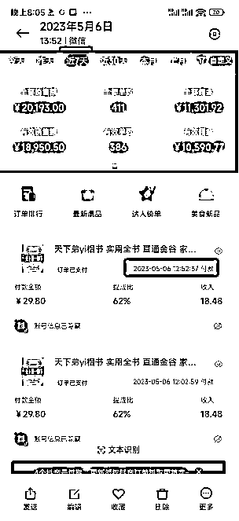
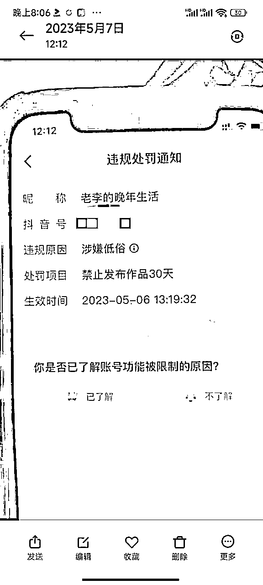
封号
不行不行。太难了，我要另寻出路，找个不那么容易违规的项目去做。这时某个聊天群里一位群友晒出了一天干了55万GMV的截图。 我就像是在黑暗中看到了希望的曙光一样。幻想着自己也能像他一样，起飞一把！一口吃个大胖子！
结果可想而知，那就是以失败告终。根本原因，我换项目是在逃避解决问题。稍微遇到了一点封号风波就扛不住了，立马就要撤了。要换项目了。殊不知自己违规封号一直是这个项目的护城河。欠缺的不是好项目。而是直面解决现状问题的勇气。 这个项目根本没有不能做，5月依然有很多人在上面赚到钱，有位大佬5月搞了近三十万。
我今天选择离开了，换另外一个项目。那么我到另外一个项目就能做的好吗？我对另一个项目的了解的信息足够真实可靠吗？项目的可成功率又有多少？看到这篇文章的朋友，如果当你准备换项目换赛道的时候，不妨也问一下自己这些问题。
我离开现在的项目的真正原因是什么？是否是因为我遇到了问题和困难，自己没有能力解决，所以是想逃避直面困难，才换一个的？我目前做的这个项目还有人能挣到钱吗？如果有我可以复制模仿吗？我真的竭尽全力去想办法解决了吗？
后来6月的结果告诉我，光想不干，没有实操，没有执行，根本不可能有答案。我只是被自己的感觉吓退了。
5月收佣1.37万
6月上半旬，也不是很理想。只挣了几百块钱佣金，因为发现自己执行力拉胯，所以在群里给自己定了一个每天更新20条挂车视频的目标，完不成当天罚200红包在群里给大家。后来我没有一天没完成的。感觉自己执行力差的朋友，也可以尝试公开立一个flag，在朋友圈或在几个熟悉的朋友群里，完不成罚钱，效果最立竿见影。
直到6月10号另一个今年的大爆款出现,《奇门改运秘术》这本书。也是因为自己每天在发品的时候，每天都要重新查看考古家，找最新的爆款或音频去跟，很耗费时间和心力，所以就把每天的方向聚焦在奇门这一个品上，每天20条图文挂车。凭借红利品的出现，当月在这个品上拿到了8W佣金。
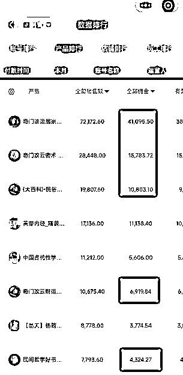
而6月还有其他几个爆品、《黄帝内经》《图解阳宅》《中国古代性学报告》等，都拿到了一些结果。通过实践得出一个结论：在一个品处在红利期的时候，要不断的铺带货视频，猛怼数量，猛怼数量，猛怼数量，讲三遍。当带货视频达到一定数量时，结果自然就会出现了，每天都会有不断的收益正反馈回来。大风来了，执行力拉满就行了。
总结出一些东西：
1.当大爆款来临时候，碰巧自己账号发了也能出单，那就一定要执行力拉满，不要再想着其他事情了。每天发重复发拼命发。
2.当大爆款来临的时候，每天只关注这一个品的各种爆款形式，都在自己的账号发一遍。没有的话，就之前的爆款每天重新制作发一遍。时间充裕的，再研究微创新。
3.次日在自己的巨量百应后台，复盘前天数据跑的比较好的带货视频，进行置顶操作，反复发操作， 再次1比1 复刻模仿，分发至其他账号，将带货视频铺满。
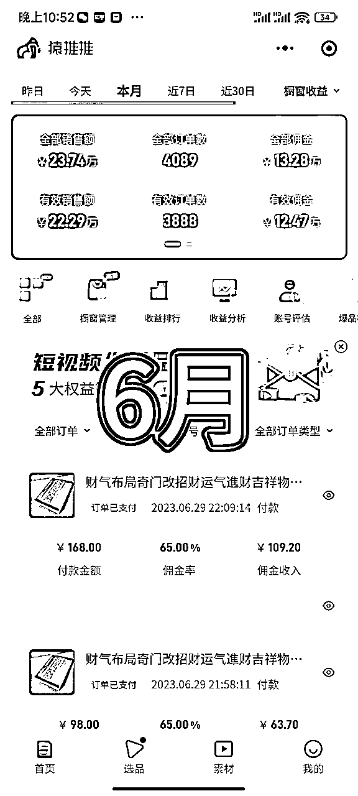
6月收佣12.47万。
有了6月的正反馈，我7月的执行力达到70%。所以每天都在不断的铺带货视频，可能今天发的视频不出单。过了两三天后才会出单，逐步累计。让自己账号有很多的带货视频可以推流，可以帮我赚钱。
来自于6月一些品的持续发，加上新的品的进入。《奇门》，《八字化解》，《图解阳宅》，汤包品《四宝茶》是7月的主力，这个品是养生品，主打男人痛点的，所以卖的非常好，还有就是之前我用倪海厦、徐文兵这样中医类的名人起号的账号，会卖的更好一些。因为账号本身都是关注中医、养生、健康之类的粉丝。所以当这样专打男人强痛点的品在卖的时候，都很好卖。但是这样的品，容易违规，容易被关小黑屋30天。《奇门改运秘术》这个品在6月实拍的基础上，开始微创新。比如加入新的背景、贴纸、拍摄角度、发其它没有发过的书里的内容，尝试用不同的音频，纯音乐去跑，改标题文案。效果都还不错。
7月的收佣5.76万。
8月我跟了这些品。
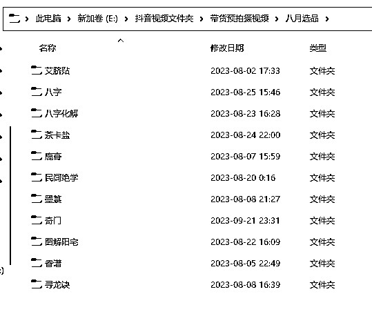
8月我的抖音账号进入了平淡期，前面几个月的爆品热度也渐渐的下来了。所以收益也会降下来不少。但是没关系，我继续保持每天20条带货视频的更新。执行力依旧，还是能有一些收益的。 那么这个收益就是我用视频数量和账号数量换来的。在低谷期，持续执行，保持好心态，等风起。 当然，八月的抖音，还是依旧有身边认识的大佬，稳定的月入十万加的
8月抖音收佣2.4万。
这是一个神奇的月份，曾经7月8月埋下的种子，在9月终于开出了果子。怼单品。我有一个1000多粉的账号。七八月的时候每天都会往那个账号上只发一种品的带货内容。也一直没怎么出单。直到9月，很多人都不发这个品的时候。我又回来更新这个品，结果它出单了。随后我就持续在这个账号上更新这个品，它就一直每天都可以出单。9月我是围绕着这个单品铺的带货视频，每天都更新15-20条这个品的带货视频。9月在这个单品收佣4.8万，其他一些品收佣1.1万。一共5.94万。
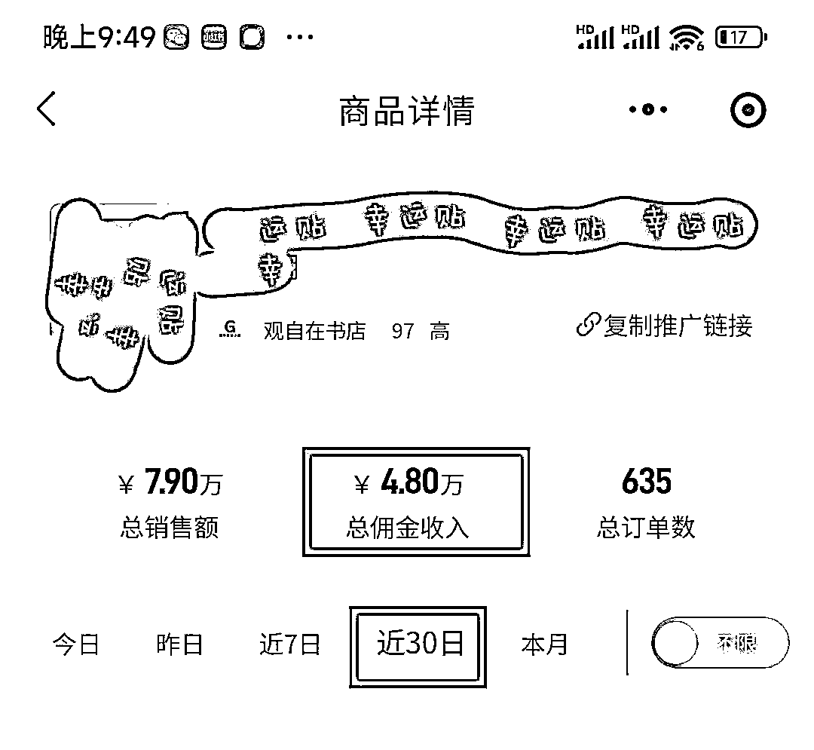
验证了怼单品的玩法目前依然可行。通过巨量百应后台也查了一些相关的数据。
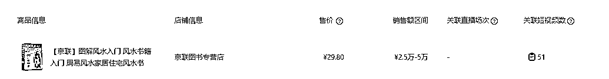
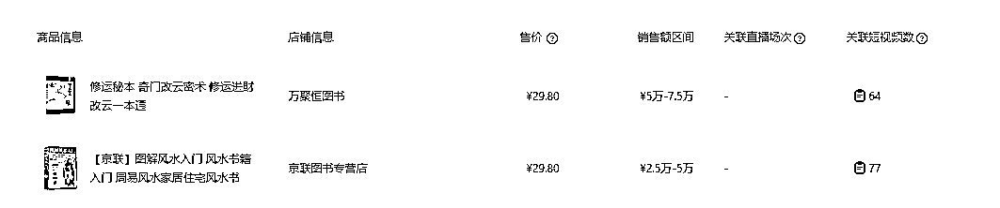
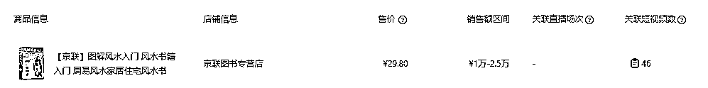
从这个对应的GMV和关联短视频数据来看。得出一个简单粗暴的结论。如果想在一个单品上收佣5000-1W。那么至少在这个品上怼到50条带货视频。如果想把这个概率提高，那么就是发布乘以数倍的该品的带货视频。我的那个单品9月大概发了400多条带货。
9月收佣5.94万。
在9月购买了人生第二套房，所以压力真的非常巨大，两套房贷在还。我这个人就是没有压力，就没有什么动力。所以挑战一下自己，努力变成更好的自己！道阻且长,行则将至 行而不辍,未来可期。
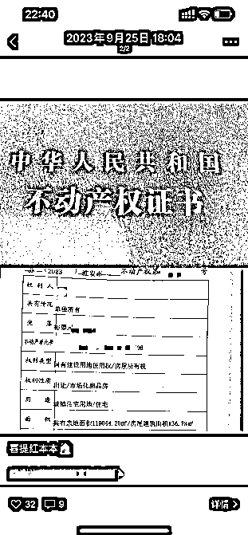
10月正常保持账号的持续更新，每日尽量保持20条以上的带货视频。然后就是通过跟爆款账号和爆品。
10月目前佣金1.88万。
1.考古家。和巨量百应
具体的方法：
巨量百应，如何把对标账号扒得底裤都不剩。 https://mp.weixin.qq.com/s/lSMqhSn7lBduneX2KxHtmA#rd
如何寻找抖音上的对标账号？以及考古家的使用方法。https://oef.xet.tech/s/gxWn3
方法出自 老师，感谢晓文老师的指导。
这个两个链接很重要，对绝大多数新手来说，是必要知识。
2.和社群的小伙伴多链接，多真诚分享，市场那么大，抖音用户那么多，一个人你吃不完。不如给关系非常不错的圈友 提供一些有价值的信息分享。那么次数多了，他以后有爆品 也会分享给你。自然路嘛，就越走越宽。
3.链接商家，其实除了我们看榜单和考古家能看出爆款，判断出爆款以外，带货环节角色中，还有一个能提前知道爆款或者潜在爆款的就是商家。 他今天刚上的新品，出单非常猛。他的打单机都快打爆了，纸都用完了，他肯定最知道了。那这个时候，就看你平时和商家的关系怎么样啦？关系不好的也可以多问呀！ 当然也不排除有些商家会故意说爆了，想让你带的。你可以再通过考古家，巨量去查验嘛！即可知道。
4.影刀。收集足够多的赚钱账号。然后用影刀自动化跟踪他们的每日橱窗销量（抖音24.1.0版本可以看近30天橱窗销量，升级新版本好像就看不到了）。做抖音是一个概率游戏。那么如果你搜集了，所在赛道的足够多的赚钱账号，假如是100个同行标对账号，检测他们的每天橱窗销量。这个账号今天总销量100单，明天这个账号一下变成了600单。那你不就知道了嘛，这个账号昨天爆了，一天卖了500单。那你赶紧去跟啊！这不就是爆品，爆款账号吗？那你就去扒一扒它昨天爆的是什么品，什么视频内容。然后像素级模仿。当你在这个赛道有足够多的赚钱样本的时候，你随时都能感知到这个赛道的爆品在哪儿，爆品爆到了哪一个阶段。春江水暖鸭先知嘛！
这里给大家分享一个我自己每天用的影刀，是免费的https://api.winrobot360.com/redirect/robot/share?inviteKey=bb634f174e80a409
橱窗销量，谁爆了，我24小时内就能知道。
最后送上一句，我5月花七千块钱学到的金句。也是让我能保持执行力的关键认知。
如果这篇文章其它你都没记住，你只要记住这一句话就够了。感谢阅读。
希望能收到各位大佬指导，有同频的朋友或者对这个赛道感兴趣的，也欢迎与我交流V：LK71981688，一起加油，进步，一起生财有术！